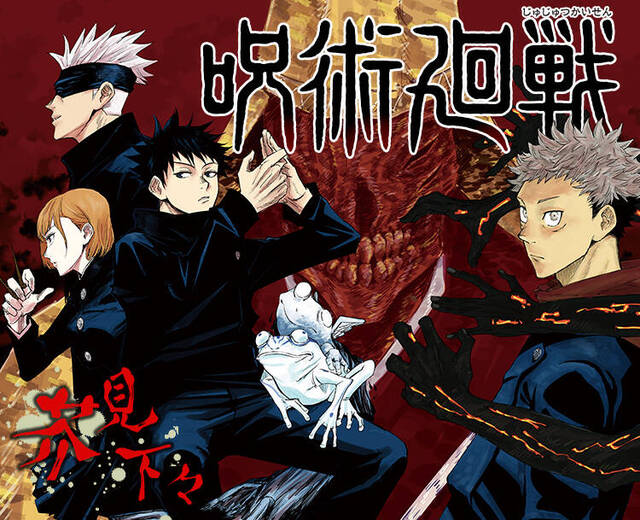
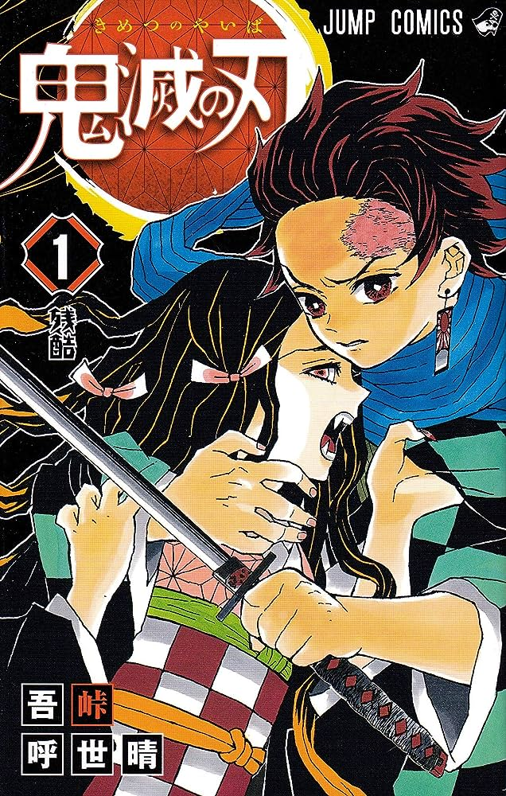

ONE PIECE

尾田栄一郎による「週刊少年ジャンプ」にて連載中の少年漫画作品。 海賊王を夢見る少年モンキー・D・ルフィを主人公をする、 「ひとつなぎの大秘宝(ワンピース)」を巡る海洋冒険ロマン。
呪術廻戦

呪術廻戦公式
芥見下々による「週刊少年ジャンプ」にて連載中の漫画作品。 人間の負の感情から生まれる化け物・呪霊を呪術を使って祓う呪術師の戦いを描いた、 ダークファンタジー・バトル漫画。
鬼滅の刃

鬼滅の刃公式
吾峠呼世晴による「週刊少年ジャンプ」にて連載中の漫画作品。 日本の大正時代を舞台に主人公の竈門炭治郎が鬼と化した妹を人間に戻すために 鬼たちと戦う姿を描く、和風の剣戟奇譚。